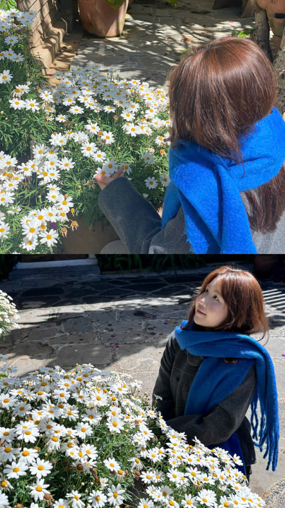

Ngày Phụ nữ Việt Nam 20/10
Một bó hoa tulip nhỏ,
gửi trọn yêu thương tặng Jian.
Mong ngày hôm nay của Jian thật dịu dàng, rạng ngời và ngập tràn niềm vui.
Một chút kỷ niệm · Dành riêng cho Jian
Những khoảnh khắc dịu dàng
Chọn ảnh từ thiết bị của bạn, tối đa 20 MB mỗi ảnh. Ảnh được lưu trên trình duyệt này, không tự gửi đi đâu.

Có những điều nhỏ bé, nhớ lại vẫn thấy ấm lòng.